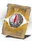

Descrição: Milagre que sente traidores. Revela a localização do inimigo mais próximo ou espírito sombrio invasor.
Aqueles que servem o Monastério de Lindelt obedecem severos preceitos por vontade própria. Este milagre foi criado para castigar aqueles que ignoram os ensinamentos virtuosos.
Localização:
Usos: 8
